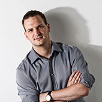
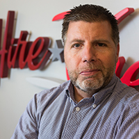

Agenda
This year’s show will have more than 60 speakers.
From the World's leading disrupters and CEOs
to inventors and start-ups, talent leaders and thinkers.
Expext discussions to catch fire!!
Inspiration!
By crowdsourcing our community we are bringing authenticity, focus, relevance and variety to the content produced with new formats and additional co-located events in 2014!
Thursday, DAY 1
Friday, DAY 2
Main Stage
7:30 - 8:30
Registration, Morning Coffee, Refreshments and Networking
8:45 – 9:45
"Try Harder" is Not a Strategy
Agile recruitment means working smarter, regularly re-prioritizing, helping hiring managers think strategically about talent, and getting buy in for new initiatives and processes to help the business move faster. The best recruiters and recruiting leaders operate differently. In this session, John Vlastelica will explore how successful recruiters and recruiting leaders actually lead and deliver results in an environment that's constantly changing.
In this engaging, irreverent keynote, we’ll stay away from theory, and focus on how-to strategies, including…
- How to build an agile recruiting strategy for the real world
- How to influence and position your ideas so that the business listens
- How to coach and reward your hiring managers to play a more engaged, active role in recruiting
| John Vlastelica CEO and Founder Recruiting Toolbox |
9:45 - 10:30
Beauty & The Geeks & Zen Culture
Scaling Talent Eco-Systems
What is the connection between Cate Blanchett, electric cars, the NHL and Talent Acquisition? A story about lean startups and design thinking, growth hacking and interview flows, ROI measurement, Internal sourcing structures and change management.
We will share best practices on scaling an organization globally when it comes to content marketing, direct sourcing, and big-data to achieve sustainable growth.
- How to measure clear ROI on your employment brand digital efforts?
- How to build a digital talent acquisition eco system that will scale?
- How to work effectively with startups to enhance innovation?
- How the CMO, the CTO, and the Corporate communications will be your best friend?
| Frédérique Scavennec Global VP of Talent Aquisition L'Oréal |
|
| Zvi Goldfarb Head of the Talent Digital Lab at L'Oréal |
10:30 – 11:15
Refreshments & Expo
11:15 - 12:00
SAP: Tears & Cheers The Recruitment Journey!
12:00 - 12:45
I like Big Data and I cannot lie!
Using meaningful data to transform the future of IBM's workforce
Imagine if HR Executives could harness the power of big data and analytics with human insight; leverage human behaviour and workforce solutions; and engage employees with social and exceptional digital experiences to do more meaningful work that drives business. IBM are doing just that… In this session you will hear from IBM Chief HR Office, about they're own transformational journey to become a Smarter Workforce.
| Gary Kildare Chief HR Officer IBM Europe |
12:45 – 14:15
LUNCH
14:15 - 14:45
Building Engineering Excellence
14:45 - 15:15
A Job like no Other
The Holistic Approach- DB's approach to become a top employer
Becoming a top employer is one of the business objectives of Deutsche Bahn. Consequently, Talent Acquisition was restructured as a team and as a task field. In the highly competitive applicant market, the portfolio in professional employer branding and recruiting is a decisive factor for success. DB recruits around 7,000 new employees in Germany every year, from apprentices and graduates to blue and white collar workers, in a wide variety of jobs.
We show the most important levers of successful Talent Acquisition, provide an overview of the employer branding campaign "A job like no other", and discuss applicant expectations, recruiting skills, and selected activities in employer branding, recruiting, social media, and university relations.
| Kerstin Wagner Group Head of Talent Acquisition Deutsche Bahn |
15:15 – 16:00
Refreshments & Expo
16:00 - 17:00
Objective: Hire the Best Talent in the World!
What does it really mean to be a global recruiting team?
How do you grow from two guys in a garage to more than 70 offices worldwide? By applying some of the same principles of innovation to the recruiting process that the engineers you’re hiring apply to product development -- from using data to drive decision-making to putting the user first. Join Mary Hamershock to hear best practices on translating some of the same principles behind self-driving cars and balloon-powered internet into strategies for building a workforce as diverse as your users, balancing agility and scale and asking the right questions in interviews.
| Mary Hamershock Global Head of Technical Staffing Google |
17:00 – 18:45
Cocktail Party
Talent Relationship Management Room: D201
11:15 – 11:45
The "Holy Grail" of Executive Development
In his role as Group Head of Talent & Leadership Development at Prudential plc, one of the worlds most successful financial service companies, Björn was tasked with creating a talent development strategy that would be relevant for a world that is increasing Volatile, Uncertain, Complex and Ambiguous (VUCA). As part of this work, Björn created a development event that has been hailed by external observers as “The Holy Grail of Executive Development”. This presentation takes us through the story of creating and delivering this cutting edge development event and gives us a direction of where the field of talent development might be heading.
| Björn Thomas Atterstam Managing Partner & Enterpreneur Boomtags |
11:45 - 12:15
Give and Take: Why Cooperation beats Combat in the War for Talent
The session describes how companies can gain access to superior students and strengthen their employer brand by teaming up with competing companies for joint recruiting programs. This will be demonstrated by the “Gap Year” program (Allianz, Bertelsmann, Henkel, McKinsey), an internship program for bachelor students that want to gain some professional experience before moving in to a master´s degree. Another shorter example will be the “Blind Applying” program spearheaded by the Deutsche Telekom and 17 other German-based companies.
|  | Nico Rose Senior Director Corporate Management DevelopmentBertelsmann |
| Dr. Thomas Fritz Head Director of Recruiting McKinsey & Company |
12:15 – 12:45
Weeds may not be bad plants
Weeds may not be bad plants—they’re just plants growing where you don’t want them to. Once you’ve placed a plant and realized it’s in the wrong place it can be very difficult to move or even remove. The key is to make sure you know the plant so you can place it in the right place. During this session Neil Morrison, group human resources director, UK and international companies at Penguin Random House will explore the ins and outs of discovering and then placing talent in the right place to avoid any costly weed control.
| Neil Morrison Group HR Director, UK and International Companies at Penguin Random House |
12:45 – 14:15
LUNCH
14:15 - 14:45
Think Global, Live Local
The evolution of the traditional global internship
For today’s students developing the skills to work effectively across borders and with different cultures is paramount. Gaining international experience is near the top of their list of goals. How do organizations with limited budgets offer unique experiences without breaking the bank? We will share our story of how budget constraints forced innovation, and evolved our traditional international internship into a global, virtual experience.
| Tarek Dawas Global Talent Acquisition Leader at Deloitte |
|
| Danielle Trawick Senior Manager, Global Recruiting, Deloitte |
14:45 - 15:15
TRM 2.0: Filling the gap between the corporate and the real world
How TRM for Gen Y High Pots really works: the careerloft case
- Why it's crucial to communicate on eye level – and what that really means
- How to create a TRM tool not for but with a target group
- How to combine on and offline activities in a holistic approach
| Gero Hesse Director & Board Member Medienfabrik |
15:15 – 16:00
Refreshments & Expo
Talent Technology Room: D202
Moderator: James Mayes
11:15 – 12:00
Reaching and Nurturing the Best and Brightest Stars in a Recovery Market
How to get to the stars earlier than your competition and nurture top talent in the face of surging job vacancies
Practitioners from three leading companies in their field, Achmea, G4S, and RWE npower, deliver real life insights on attraction strategy, recruiting analytics and talent pooling. Proactive examples of how to prepare for the forecast surge in job requisitions as the economy recovers will be covered, providing practical advice on how to optimise your recruiting effectiveness in a changing environment.
By attending this session you will learn:
- How an Application Tracking System (ATS), with innovative third party online and mobile integration, can improve your attraction strategy
- How to measure performance and ROI of external sourcing channels and why it’s important
- How to prepare in advance for the anticipated surge in job requisitions by proactively identifying and nurturing future potential candidates before the job needs to be filled
- Why the best and brightest stars might be closer than you think
| Lucien de Freitas Corporate RecruiterAchmea |
|
| Matt Burney Group Online Resourcing ManagerG4S |
|
| Adam Templeman Head of ResourcingRWE npower |
|
| Michel Geurts Head of Account Management Western Europe Lumesse |
12:00- 12:30
Digital Revolution in Recruiting
The "Why", the "How" and the "So What"? of Digital Video interviewing
Outstanding companies need outstanding tools to identify and recruit outstanding candidates. Be smart, be innovative, be digital and up to date on what candidates expect from their employer of choice. Digital video interviewing is the new way to connect with your talent, from the very first step of your recruiting process onwards. Future recruiting challenges cannot be tackled without video technology anymore. Stephan will present insight into:
- why the best candidates are not always those with the perfect CV
- how to discover those talents by combining personal diagnostics with cutting-edge technology
- how innovative companies enhance the quality of their candidates and set new standards in personnel selection
| Stephan Grabmeier CEO Innovation evangelists GmbH |
12:45 – 14:15
LUNCH
14:15 - 15:00
If You Think Change is Hard, Wait Till you Try Irrelevance
The world is changing faster than ever. Take a peek into the future
- Roles created only five years ago will be extinct within the next ten
- Big data will influence succession planning and predictive talent identification in ways you haven’t considered
- Collaborative consumption is a growing trend that WILL touch recruitment
- Two way surveillance is the end result – but how will we deal with the transition?
- The Internet of Things and the Wearable World will drastically increase both data points and connection opportunities
Summary: Brain food for strategic planning
| James Mayers Director Exolite |
|
| Grant Weinberg Director International Talent at Gilead Medical |
|
| Sian Feuillade HR Director at Reed |
|
| Ken Ward Interim recruitment Director Nexmo |
15:15 – 16:00
Refreshments & Expo
Disruptive InnovationsRoom: D203
Moderator: Sarah White
11:15 – 12:15
Big Data, Mobile & Social, Oh My!
Innovations in Recruiting Technology & its Impact on Business
Each year the technology that we use at an enterprise level is advancing and beyond just the technology, the depth of access we have to analytics and data is amazing. In this session, we will look at innovations that have evolved this last year, where they are headed for the next year and how to harness all of the knowledge we have available at our finger tips to be more strategic in our companies.
| Sarah White CEO & Principal Advisor Accelir |
12:15 – 12:45
Who’s able to hire the best IT professionals, ultimately wins any competition
For more and more organizations the quality of their IT environment will be decisive whether their new product will become a success or a failure. Hiring the best IT professionals is therefore a key role. But is this possible when you’re not Google or without moving to Silicon Valley?
ING wants to become the #1 favourite bank in The Netherlands. To reach this goal client value solutions in internet & mobile are a continues must. ING succeeds. For example the ING mobile app is called as the best in the Netherlands. Also Big Data is being used to realise better performance to customers. In 2013 the ING won the Customer Data Award because of a revolutionary client approach.
To make this all happen the ING needs the best IT people!
Expert IT Recruiter Rob van Elburg will show you how to recruit these top Talents.
- The do’s and don’ts
- The hits, tips & tricks
- The tools & methods
- Success & failure
| Rob van Elburg Senior Head IT Recruitment at ING BANK |
12:45 – 14:15
LUNCH
14:15 – 15:00
The Future of Recruiting or What are those Wearable Technologies?
15:15 – 16:00
Refreshments & Expo
Employer Branding Room: D204
Moderator: Nelly Riggenbach Hasler
11:15 - 11:45
Thriving in an Uncertain World become a Factualist Employer
The War for Talent is over. Talent won.
As employers try to develop an understanding of the current talent market, two major trends stand out. Firstly, the increasing pace of change along with shortening product life cycles, decreasing employee loyalty, and political fragmentation, all contribute to significant uncertainty, rendering long-term planning complex and difficult. Secondly, with the world economy coming to a halt in the wake of the Great Recession, employers need to brace themselves for an extended period of low or even no growth, with major implications for talent management.
On a positive note, technological innovation – like Big Data and End-to-End Systems – is reshaping the scope and nature of the HR function, opening up new ways for it to add business value and become more strategic.
The presentation will talk about most important divide in today’s talent market that runs between employers who prefer to stick with their gut feelings and trusted ways of working, and employers who view talent as a strategic competitive asset – the Fatalist. The latter kind of employers – the Factualists are data-driven at the core, basing decisions on research, and make a point of staying at the forefront of HR technology and analytics. What makes the Factualists stay ahead of the competition will be presented in detail during the presentation.
| Nelly Riggenbach Hasler Vice President - EMEA UNIVERSUM | |
| Claes Peyron Global Head of Insight UNIVERSUM |
11:45 - 12:45
Master Lab
How to link your talent attraction strategy to business needs
Attracting and recruiting suitable and motivated employees is crucial for the longterm success of your business.
A thorough strategic workforce planning is the starting point for a successful talent acquisition strategy. There are factors like the type of jobs you are hiring for and the target groups you want to attract which influence your concrete master plan.
On the external market, the competition for talents has increased and continues to accelerate: Meanwhile most companies understand the significance of employer branding and recruiting and develop an answer to this paradigm shift in the market. When it comes to candidates, not only their expectations towards a potential employer are changing but they are also very challenging in your first encounter.
In this highly competitive applicant market, the portfolio of professional employer branding and recruiting is a decisive factor for success and has to be carefully tailored to your business needs and market expectations/environment. Are your talent acquisition strategies agile and adapt quickly to new trends?
This masterclass invites you to discuss social and market trends as a rapidly evolving framework for talent acquisition activities and analyze the most relevant ingredients for a successful talent acquisition strategy. Discuss first-hand insights into DB’s holistic and agile talent acquisition approach and get inspired by our recent 18 months talent acquisition journey.
| Kerstin Wagner Group Head of Talent Acquisition Deutsche Bahn |
12:45 – 14:15
LUNCH
14:15 - 14:45
Finding Your Voice
The Biggest Company In The World That Nobody Knows
- How to build Employer Branding From Scratch
- Finding Your Own Corporate Identity Within A Larger Organization
- How To Effectively Leverage In-house Recourses To Improve Your Employer Branding.
| Esteve Hartensveld Recruitment Lead Europe Aramco Overseas Company |
15:15 – 16:00
Refreshments & Expo
Unconference Sessions Room: 403
11:00 - 12:00
Social Recruitment Monitor
12:00 - 13:00
Extreme sourcing
14:30 - 15:30
Recruiting in a post - ATS world
Room: 404
11:00 - 12:00
NL Recruitment, doing business in The Netherlands!
12:00 - 13:00
Meaningful, interpretable and actionable data!
14:30 - 15:30
Reverse and Cross Mentoring
How to engage and profit from your Millennial Talent
| Nico Rose Senior Director Corporate Management Development Bertelsmann |
Room: 407
11:00 - 12:00
Why recruitment needs to change Fast and how it should be done!
12:00 - 13:00
Creating an Internal Corporate Agency
14:30 - 15:30
Talent Mapping
Why talent map? What data is important and what part does recruiting play from the ATS to the CRM
| Brad Cook VP Global Talent Acquisition Informatica |
Room: 408
Product Demo Room: D301
11:45 - 12:15
PeopleFluent
Captivating the Candidate – The Engagement Enigma (and how to solve it...)
As the global economy continues to emerge from the recession, many employers face a new struggle: finding qualified talent who can advance business goals and deliver competitive advantage. With top performing employees in greater demand than ever, companies must be able to leverage the best practices and proven strategies that can help them attract and engage right-fit talent. Yet, to meet this goal, employers must work to attract qualified talent across a growing number of venues and platforms, utilizing the latest technology innovations that can deliver an effective talent acquisition process.
| Frederik Ballon Director EMEA Operations PeopleFluent |
12:15 – 12:45
HireVue
Making Business personal again, with a digital touch
|  | Scot Sessions Director of MarketingHireVue |
12:45 - 14:00
LUNCH
14:00-14:45
Spire
HR Transformation: Transformation of Core HR Operations with Big Data Technologies
Spire shall present the application of Big Data technologies, like Demand-Supply Mapping with 'Unstructured' Big Data in conjunction with a Contextual Search Platform, to the core areas of HR like Talent Acquisition, Global Workforce Management and Talent Growth Management. The presentation will also include demonstration of how unprecedented Talent Analytics and Intelligence can be generated by applying these technologies to various forms of HR data available within and outside organizations
| Saurabh Jain Founder and CEO Spire Technologies Pvt. Ltd. |
14:45 - 15:15
Lumesse
Are you losing the race for talent before it has started?
Why mobile career sites are no longer optional. By attending this session you will learn:
- Why Mobile matters: the state of mobile today
- Differences in mobile approaches and best practices
- Practical examples of what to do and not do when delivering a mobile career site experience
Get answers to your mobile questions during this session
| Romuald Restout Head of Product - Talent Acquisition Lumesse |
15:15 - 16:00
Refreshments & Expo
16:00 - 16:30
Haufe
Speed up your eRecruiting! powered by Haufe
| Michael Prinzhorn Sales Consultant Talent ManagementHaufe-umantis AG |
Thursday, DAY 1
Friday, DAY 2
Main Stage
7:45 - 8:30
Registration, Morning Coffee, Refreshments and Networking
9:00 - 9:30
Re: Invent Recruiting
Disrupter: The Future of Recruitment in the Eyes of an Industry’s GameChanger!
Our traditional "Apply and Track" model for recruiting is dead. Candidates (the best ones at least) have moved on. The world has moved on. Yet, hiring the best has never been so critical to business success
How do you source, engage and hire top talent in a world where resumes are a thing of the past, where people use mobile phones to search for jobs, where no good candidate will fill out your "application form", where you are already connected to every single person you will hire in the next 5 years?
Industry visionary, Jerome Ternynck, takes a critical look at where we are and how smart businesses re-invent recruiting to win the talent war and compete in the knowledge economy.
| Jerome Ternynck Founder & CEO SmartRecruiters |
9:30 - 10:00
How the future unfolds
Preparing for a Job that doesn’t exist yet
Organisations are in a continued state of transformation. Strategies are changing, roles are changing , and required capabilities are changing. This means that almost all roles will look different in the future compared with how they look today. In effect, many roles which will be important in the future do not even exist today. Traditional approaches to learning and talent management are based on the assumption that we can identify required “competencies”, and hence use development experiences and training to build the required competencies. However, this concept is static and we end up developing people to do “today’s” work more effectively, rather than preparing them to do tomorrow’s work. The presentation will use examples from Maersk Line, the world´s largest container shipping company, on their efforts to orient their learning and talent programs towards this new reality.
| Pete Baker Global Head of Learning & Organisation Development Maersk Line |
10:00 – 10:30
Global, Virtual & Under - resourced?
Finding your Sweet Spot at the Centre of a Decentralised Global Organisation
Working in a global role within a decentralised organisation can be challenging, frustrating and sometimes isolating. It often means having huge influence but very little power. On the other hand it can stimulate innovation, deepen client relationships and inspire amazing results through collaboration. Join this session to hear about some of the challenges we faced at Deloitte, some of the successes, mishaps and lessons learnt from a journey to find the sweet spot.
| Tarek Dawas Global Talent Acquisition Leader at Deloitte |
10:30 – 11:15
Refreshments & Expo
11:15 - 11:45
Time to Finally Say Goodbye to Job Adverts
- Identifying key and bottleneck functions to better focus on major recruiting challenges and needs
- Building an attractive and unique employer brand based on a strong employee value proposition
- Using professional social networks as part of active sourcing strategies in order to approach passive candidates
- Establishing talent pools and building long-term relationships with promising candidates
- Ensuring a positive candidate experience throughout the re- cruiting-process using speed, transparency and appreciation
Talent Relationship Management is not only an additional idea to re- cruiting but a totally new set of approaches, competences, roles and mindsets required to fill critical and hard-to-be-filled positions.
Professor & Dean of MBA Studies HFU Business School Furtwangen
11:45 – 12:15
Leading Talent Acquisition - Do you have what it takes?
Let`s start delivering business relevant results because our leaders frankly don`t care about time to fill or cost per hire
| Fernando Delgado Global Head Talent Acquisition, Standards & Tools Siemens |
12:15 - 12:45
The Global vs Local Difference
How realistic is it that one size fits all?
Whilst organisations strive to implement a global recruiting strategy, and make global agreements with technology providers, the question is "how realistic is it that one size fits all?” In this interactive panel, 4 global heads of recruiting from India, APAC, EMEA and CIS, to look at 5 big questions from their own regional perspective, as well as taking questions from the participants in the room.
- Can one size fit all?
- What are the stand out cultural differences?
- Can one technology really serve everyone?
- How does brand differ from region to region?
- How do you stay legal when you go global?
And a bonus question: Should recruiting be centralised or localised?
Hosted by Bill Boorman, the founder of #true, this promises to be a very useful practical session for anyone charged with hiring on a global basis
| Bill Boorman Founder #tru |
|
| Kevin Blair Head of Talent Acquisition-EMEA-R at Cisco |
|
| Brad Cook VP Global Talent Acquisition Informatica |
|
| Ed Barzilaij CEO Maximum Group |
12:45 – 14:15
LUNCH
14:15 - 15:00
M.I.A Data
- Meaningful Data
- Interpretable Data
- Actionable Data
In this session Colin will add some reality to the data debate and discuss how data driven decision making can only be successful if HR and Resourcing focus on capturing and utilising meaningful, interpretable and actionable (MIA)data.
He will provide some real-life insight into delivering business value by applying this methodology
| Colin Minto Global Head of Resourcing G4S plc |
15:00 – 15:45
Around The World in 100 Days!
Creating 34 Sites, 300 Pages in 19 Languages in under 100 days
The journey (and reasoning behind) the creation of PepsiCo’s biggest global web development and deployment project to date. What “responsive” design means at PepsiCo with regards to talent and why it’s a more personal journey then you’d think
How PepsiCo Recruiting constructed and took full ownership of a mobile responsive and global career site in less than 100 days… and why.
- The reasoning behind Talent Acquisition owning a career site vs. leaving with an IT or industry vendor
- Amazing insights resulting from some significant risks
- Lessons learned along the way – and how you can do the same!
| Chris Hoyt Global Talent & Marketing Leader PepsiCo |
16:00
Refreshments & Expo
Talent Relationship Management Room: D201
Moderator:
9:30 - 10:15
Two Kinds of Recruiting: Right, Wrong or Complementary
There is a vast difference in the treatment you give someone who asks for a job (by responding to an ad/posting) and someone you try to persuade to work for you (by actively seeking them out). For the first group, recruiting is a process of weeding a large pile of qualified applicants into a smaller pile. The burden of proof always rests with the applicant. For the second group, the burden of proof rests with the employer. It's up to us to prove that we're good enough for you. In this debate, Felix Wetzel and Bill Boorman will argue the intricacies and implications of the idea that all candidates should be treated as if they were in the second category. Expect sparks to fly.
| Bill Boorman Founder of #tru |
|
| Felix Wetzel COO Jobrapido |
11:15 - 11:45
Are YOU ready to meet the needs of the move to a blended workforce?
Gaining efficiencies and controlling costs trough engaging and managing a blended workforce
- Gaining efficiencies and controlling costs through engaging and managing a blended workforce
- Taking a holistic view across permanent, contractor, and temporary recruitment
- How a blended workforce can help you cope with peaks and troffs in recruitment
- o Providing a consistent candidate focused recruitment experience
Attendees of this session will gain a better insight and understanding of how their organisation can view their total workforce and be able to control, contain or optimize costs to ensure alignment with business objectives through visibility into what they are spending -- and on what type of talent -- can make more-informed decisions when it comes to human capital investment.
| Roger Clements Executive DirectorHyphen Workforce Solutions |
|
| Shelly Cushway UK Recruitment Leader AVIVA plc. |
|
| Jeff Carr President & CEO PeopleFluent |
11:45 - 12:15
Resourcing: Managers changing their minds
Working for an organization where both managers and professionals get a lot of freedom to run their own business, optimizing the recruitment process can be quite a challenge. Managers were used to opening positions last-minute but expect them to be filled quickly and usually leverage their own vendors. Professionalizing our recruitment process started incidentally when we changed from individual and on-demand support to supporting and advising our managers with realizing a more long-term recruitment strategy.
Currently we are working on centralizing the hiring process in such a way that our managers will experience benefit. This change can be tricky, for managers will feel like losing both grip and speed.
In both cases, recruitment and hiring, the managers are changing the way they interact with candidates, suppliers and each other but also with the recruiters, their employees and with other organizations. This is a mindshift, a cultural change which has to be addressed without pointing it out, so the focus to the endresult won't be lost.
This session will yield insight in the process and in the human factor of professionalizing resourcing.
| Jindra Kessener HRD and Leadership Development Head TNO |
Talent Technology Room: D202
Moderator: Alan Whitford
9:30 - 10:00
Getting Value Out Of Your ATS 25 Years On
- Why do you have an ATS to begin with?
- Have you ever looked at your candidate database?
- When was the last time you contacted the candidates?
- Who controls your career site?
- When was the last time you trained your users?
- What contextual help tools do you provide?
- Can you do Mobile?
- Let's fix your process together
The ATS has been in use now for over 25 years. Yet, most organisations are still using the ATS as nothing more than an electronic filing cabinet, having automated their paper based approach to recruitment. In this session we will take the delegate back to the basics - from: Why they are using an ATS to begin with through to Getting real value out of their existing systems. We will take an interactive approach, with delegates sharing their experiences, frustrations and successes with fellow attendees.
| Alan Whitford Recruitment Strategist Managing Partner RcEuro |
10:00 - 10:30
The Online Work Revolution
These days, “business as usual” is a thing of the past. Technology advances and changes in attitudes toward employment are driving workers and businesses to online work platforms like Elance in record numbers.
Hear Kjetil J. Olsen discuss industry hiring trends, and how they show a significant shift to online employment – making freelancers a viable alternative to hiring full - time. Discover what skills are in demand around the world, and how businesses of all sizes can successfully leverage online work platforms to source for additional work, hire on - demand talent and continually scale their business while getting the most from their budget.
| Rich Pearson SVP Categories and Geographies Elance-oDesk |
11:15 – 12:00
Sequel: Big Data Part II : It takes Big Data to build Big Insights.
Last year PepsiCo shared its vision and work towards a “jump shift” reporting and insights solution for Talent Acquisition and HR. Hear what PepsiCo has learned over the last year, how the leadership and teams have responded and what the data is being used for now (and the plans ahead!)
- Drawing a line in the sand with regards to standard reports
- Empowering recruiters to “own the business” and become advisors
- What’s next? Or Lessons learned.
| Chris Hoyt Global Talent & Marketing Leader PepsiCo |
12:00 – 12:30
Partnerships - Which one is right for you?
In an ever changing global market we are regularly confronted with a variety of business challenges. Who to hire? Who to sack? Do we renew this contract or that one? Laurie’s knowledge and experience as practitioner and partner gives her a unique perspective on how to best navigate the path of deciding whether or not to engage with SaaS based technology providers and which ones. She’ll explore the importance of utilizing a strategic implementation specialist as well as how to determine if using an RPO’s is right for you.
| Laurie Padua Partner Talent Collective |
iRecruit UniversityRoom: D204
Moderator: Nelly Riggenbach Hasler
9:30 - 10:30
Master Lab Session: What are your biggest Strengths Mr Employer?
In times of growing talent shortage employers see the need of developing and communicating a strong employee value proposition (EVP). It requires answering multiple key questions: What are our strengths? Who are our relevant target groups and what are their preferences? Who are our competitors in the labor market and what do they offer? In this session it will be presented how to answer these questions based on a selection of real cases. Moreover, we will discuss appropriate channels to be used for communicating the EVP.
| Prof. Dr. Armin Trost Professor & Dean of MBA Studies HFU Business School Furtwangen |
11:15 - 12:45
Master Lab Session: Serious Gaming and Simulations
Every large organizational change is accompanied by an initial drop-off in performance — not often catastrophic, but always noticeable. The main reason is that change, although natural, is not easy and presents a number of serious challenges inherent in its very nature. Different layers within an organization always change at different speeds, accompanied by conflicting interests and competing models of how to change and how to make it sustainable. Our initial and natural (Darwinian) response to change is resistance, and communication — the main channel for introducing and managing change — is often unreliable. In addition to that, organizations often perceive change as an event and not as a process, where “everything will go according to plan” which of course it never does. To minimize the initial drop-off in performance and achieve performance improvements which are driving the need for change, an organization must proactively address these challenges. Simulations and serious games are an effective and efficient approach to do this, and in my view should be an essential element in supporting talent management and any change management initiatives. They help us in getting a holistic view of the required change and the reasons behind it; exploring alternative scenarios within a safe setting; enhancing and facilitating communication and acquiring of new knowledge, skills and behaviors; and experiencing the new ways of working and benefits from change. In the proposed presentation I would discuss in detail what are the main challenges for successful organizational change and based on a number of cases describe how different simulations and serious games can be used to address these challenges.
- What are the fundamental reasons why change is difficult
- What are the challenges in dealing with these difficulties
- How can simulations and serious games be used to address these challenges
- Why are simulations and serious games effective in enabling change
| Dr. Ivo Wenzler Senior Principal Accenture & Associate Professor Delft University of Technology |
Sourcing Lab: Foundation of Strategic Sourcing Room: D301
9:00 - 10:30
Part I.
What do you do when your candidate pipeline dries up? The Recruiting Toolbox approach to talent sourcing prepares you to proactively find and engage passive talent. This workshop will help you develop the skills needed to confidently present on-target candidates within reasonable time frames. The workshop will cover, how to find hidden talent on the internet (including writing effective Boolean search strings), how to find contact info, and how to persuasively communicate with passive candidates. The session will be interactive and filled with real-world examples and scenarios, and participants will leave with many resources, tools and templates to help them when they return to their desks.
Who should attend?
Talent Leaders who want to expand their knowledge of passive candidate sourcing. While this workshop will cover foundational sourcing knowledge, it will also present advanced concepts and approaches to sourcing passive talent.
| Carmen Hudson Principal Consultant, Sourcing and Social Media Strategy at Recruiting Toolbox |
10:30-11:15
Refreshments & Expo
11:15-12:45
Part II.
What do you do when your candidate pipeline dries up? The Recruiting Toolbox approach to talent sourcing prepares you to proactively find and engage passive talent. This workshop will help you develop the skills needed to confidently present on-target candidates within reasonable time frames. The workshop will cover, how to find hidden talent on the internet (including writing effective Boolean search strings), how to find contact info, and how to persuasively communicate with passive candidates. The session will be interactive and filled with real-world examples and scenarios, and participants will leave with many resources, tools and templates to help them when they return to their desks.
Who should attend?
Talent Leaders who want to expand their knowledge of passive candidate sourcing. While this workshop will cover foundational sourcing knowledge, it will also present advanced concepts and approaches to sourcing passive talent.
| Carmen Hudson Principal Consultant, Sourcing and Social Media Strategy at Recruiting Toolbox |
12:45-14:15
LUNCH
14:15-15:45
Part III.
What do you do when your candidate pipeline dries up? The Recruiting Toolbox approach to talent sourcing prepares you to proactively find and engage passive talent. This workshop will help you develop the skills needed to confidently present on-target candidates within reasonable time frames. The workshop will cover, how to find hidden talent on the internet (including writing effective Boolean search strings), how to find contact info, and how to persuasively communicate with passive candidates. The session will be interactive and filled with real-world examples and scenarios, and participants will leave with many resources, tools and templates to help them when they return to their desks.
Who should attend?
Talent Leaders who want to expand their knowledge of passive candidate sourcing. While this workshop will cover foundational sourcing knowledge, it will also present advanced concepts and approaches to sourcing passive talent.
| Carmen Hudson Principal Consultant, Sourcing and Social Media Strategy at Recruiting Toolbox |
Unconference Sessions Room: 403
09:30 - 10:30
Implementing referal networks and rewards
What works and what doesn`t. How to step up engagement and participation in the company, and achieve hiring nirvana.
| Kes Thygesen Co Founder and VP Product RolePoint |
11:15 - 12:15
Building Corporate Career Sites with Candidates & Recruiters in mind
12-15 - 13:15
The Social Mix
What is social recruiting really?
Who does it well and who is just playing? is it all LinkedIn or is there more?
 |
Jacco Valkenburg Managing Consultant at Recruit2 |
Room: 404
9:30 - 10:30
The Tech Recruiting Team
What does talent acquisition look like in a technology company?
Is it sourcing, administration, social media or more?
| Kevin Blair Head of Talent Acquisition-EMEA-R at Cisco |
11:15 - 12:15
Hiring Globaly
Does "one size fits all" really work?
What are the real differences between hirig from China to Germany?
| Aki Kakko Co-founder Head of Product #tru |
12:15 - 13:15
Start Ups Hiring
How do you get the best talent to take the risk? How to hire to a changing culture.
| James Mayes Director Exolite |
Room: 407
9:30 - 10:30
Talent Acquisition Today
Recrutiting and the role of the recruiter is changing quickly. Things aren`t just the same
| Bill Boorman Founder #tru |
11:15 - 12:15
Slaying the Dragon
This is a fully interactive track to slay the "Big Data" dragon.
Separating Myths from the reality.
| Patrick Boonstra Consultant Recruitment Marketing & Employer Branding Eneco |
12:15 - 13:15
The UK Candiate Experience
Room: 408